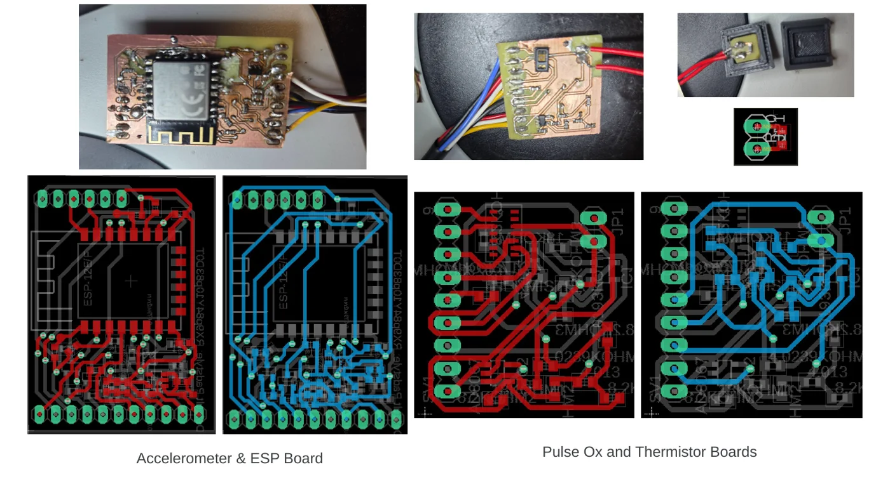
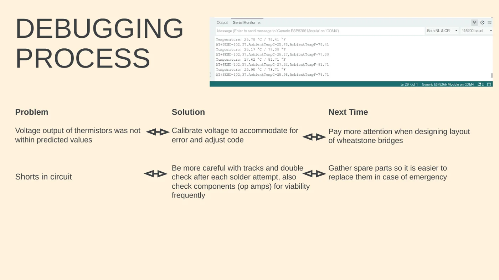
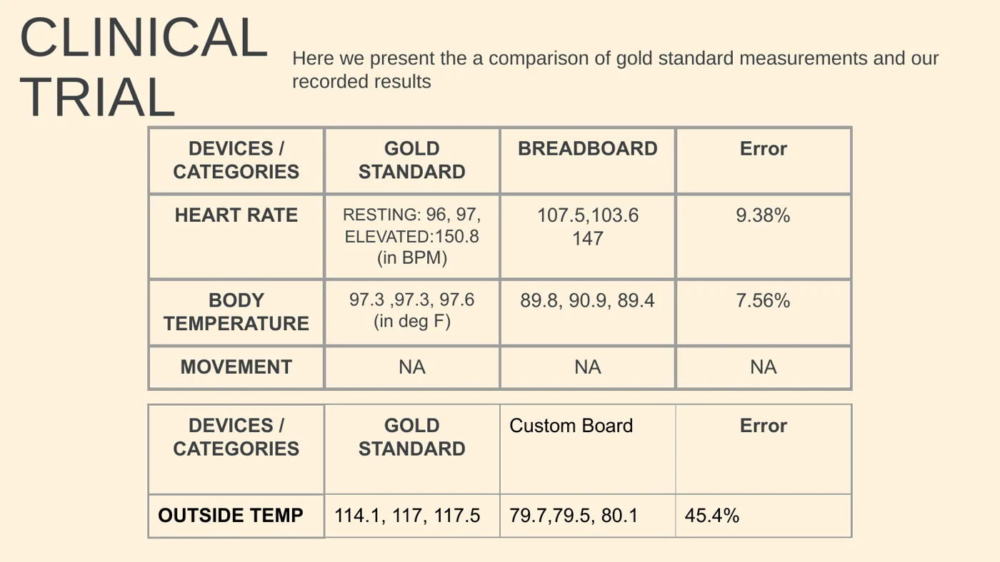

Track Your Trek
A wearable heat-illness monitoring concept for hikers that combined physiological sensing, motion, temperature, wireless communication, alerts, and custom electronics. The project became an important lesson in designing for integration, calibration, testability, and failure recovery.
The most valuable outcome was learning to treat a biomedical device as a chain of dependent subsystems: sensing, power, communication, packaging, software, calibration, and validation.
Clinical need and system concept
The team designed Track Your Trek around hikers exposed to prolonged heat. The concept was to combine physiological and motion indicators with temperature measurements, transmit data to a ranger-station receiver using LoRa, and provide visual or audible alerts when measurements crossed defined thresholds.

My engineering work
I worked directly on the electronics and integration path. Early in the project I debugged the MAX30102 pulse-oximetry sensor and investigated signal noise. I then reviewed sensor interfaces, developed the first mainboard layout in Eagle, worked on the LoRa receiver, submitted the mainboard for fabrication, soldered and assembled hardware, probed voltage outputs, and helped integrate the boards into the final system.
The work also included debugging the accelerometer with a separate ESP, soldering pin connections for more reliable interfaces, and troubleshooting the temperature-sensing circuitry during final assembly.
PCB and subsystem integration
The project progressed from commercial-module testing toward custom boards. The final documentation includes an accelerometer/ESP board plus separate pulse-oximetry and thermistor boards. This was where layout choices, solder quality, component viability, wiring, and access for rework became practical engineering constraints rather than abstract design considerations.

Communication and software
The prototype used LoRa communication between the wearable and the monitoring station. The software initialized the sensors, calculated and averaged heart rate when contact was detected, read acceleration and temperature data, assembled those values into a message, and transmitted the message at regular intervals. The team also built a simple display and alert logic for received measurements.

Validation exposed the limitations
The final comparison against reference measurements showed that the breadboard prototype was much closer to the reference for heart rate and body temperature than the custom-board temperature measurement. The reported comparisons were 9.38% error for heart rate, 7.56% for body temperature, and 45.4% for the custom-board outside-temperature measurement. I treat these results as evidence of what still needed to be fixed, not as proof of a finished clinical device.

Lessons
Two recurring problems were thermistor outputs that did not match predicted values and shorts introduced during board assembly. The team responded by recalibrating the code around measured voltages, inspecting tracks and solder joints, checking component viability, and repeatedly isolating subsystems before reintegration.
- Design PCBs for probing, rework, and component replacement.
- Validate each sensor and communication path independently before full-system assembly.
- Compare measured voltages with expected values early, rather than waiting until final integration.
- Mechanical packaging has to preserve access to electrical interfaces.
- A prototype can be valuable even when it fails, if the failure is measured and converted into a better engineering process.